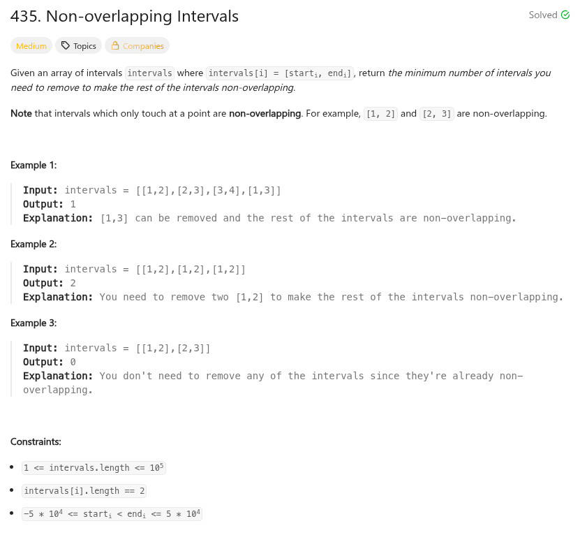

參考資訊：
https://www.cnblogs.com/grandyang/p/6017505.html
題目：

int mysort(const void* pa, const void* pb)
{
const int** a = (const int**)pa;
const int** b = (const int**)pb;
if (a[0][0] == b[0][0]) {
return a[0][1] - b[0][1];
}
return a[0][0] - b[0][0];
}
int eraseOverlapIntervals(int** intervals, int intervalsSize, int* intervalsColSize)
{
int r = 0;
int cc = 0;
int last = 0;
qsort(intervals, intervalsSize, sizeof(int *), mysort);
for (cc = 1; cc < intervalsSize; cc++) {
if (intervals[cc][0] < intervals[last][1]) {
r += 1;
if (intervals[cc][1] < intervals[last][1]) {
last = cc;
}
}
else {
last = cc;
}
}
return r;
}